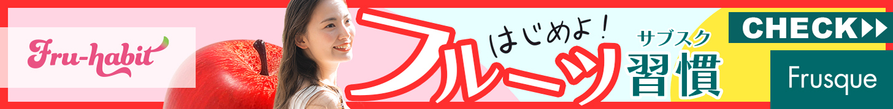
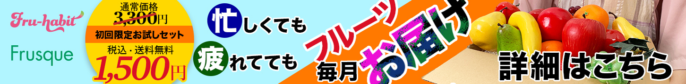
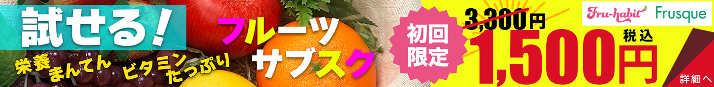

会社概要
宮城県仙台市出身の社長のもとに、農業従事者、農大出身者やウェブアプリ開発者が集まり「フルハビ」サービス開始のために起業されたスタートアップ起業。
制作期間
2024年07月22日～2024年07月25日
作業範囲
- コンセプト(2h)
- スチール撮影(5h)
- デザイン(3h)
- 写真加工(2h)
- コピーライティング(1h)
フルハビ：サービス概要
国内の規格外フルーツを有効活用するために考案されたサブスクリプションサービス。
制作方針
申込サイトへの誘導を目的とし、目に止まることを最優先の目標とする。また、初めてフルハビ・フルスクを知った方に好印象を与えるような明るく爽やかなイメージを持たせることを意識。Yahoo! JAPANにて7月〜9月初旬の掲載を想定。
各デザインについて

【ターゲット】社会人になり、一人暮らしを始めて数年という20代女性を想定。物価の高騰で気軽にフルーツが買えない方にも、安くておいしいフルーツを食べる習慣を持って欲しいという願いを込める。
【ポイント】フルハビとフルスク社を知ってもらえるようにロゴを大きく配置。明るく爽やかなイメージを持たせるために彩度の高い色使いでまとめる。みずみずしく「食べたい！」という気持ちを引き立てることを意識して制作。

【ターゲット】忙しくて外食やコンビニの利用が多くなりがちな、40代の独身男性を想定。毎月届くサブスクで、手軽にサービスを始められることをアプローチする。
【ポイント】一番見せたい文言は視認性が高いゴシック体の文字で、枠からはみ出すようにダイナミックに配置。「お届け」の部分はこのバナー内に使用されていないビビッドなピンクの差し色を入れることで目を引くように意識して制作。

【ターゲット】子育て世帯の30代女性を想定。家計を担いながら、子どもの健康を一番に考える主婦層にアプローチすることで継続利用を促す狙い。
【ポイント】値段を大きく見せたことと「試せる」という文言を左上に配置して視線誘導することを意識。黄色と赤の配色でスーパーのチラシを連想させ、お得感を全面に打ち出す。